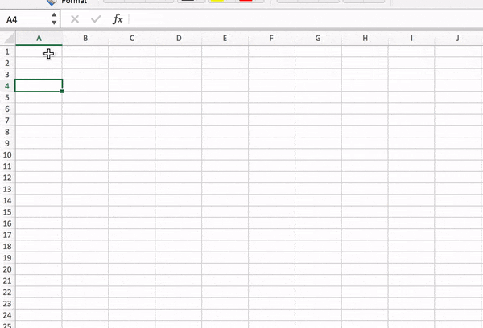

How to use pivot tables
For this tutorial the idea is to use the K-12 shootings dataset from the Center for Homeland Defense & Security. The original data can be found here. You can find a copy of the data that I used here.
Open the dataset by double clicking on the file. The data has 48 columns and 1,326 rows. You can see what is in each column here.

Best practices: create an index for your data.
- Click in the first column ("A") header and right click. Select insert.
- Give a name to that column (I usually name it "id").
- Write the number of the first two rows (1, 2).
- Select them. You should see a green square in the bottom right corner of the selection . Place your mouse on green square. If the mouse pointer turns into a black cross , double click. If everything went well, the column should be filled with an index.
- Save the file cmd S (mac) or ctrl S (pc).
Create a pivot table
Now that our data is ready, we need to make the pivot table (PT).
- Select your dataset: Use cmd A (mac) or ctrl A (pc)
- Click on the second menu in the top bar: Insert.
- Select the first option PivotTable.
- Click OK (we want the PT to use the range of data that we have already selected and we want it to open the dataset in a new worksheet).
You should see something similar to this. [Remember to name the new tab. As we are looking for data by year, you could name it "pivot-year". Another option: "pivot-1".]
- The box on the left side is were we will see the outcomes of our selections.
- The one on the right side is where we mix the ingredients.
- Where it says field name, you'll find all the variables (columns) in your dataset.
- We drag those columns to the Rows area. Doing that, Excel will find all the unique values in that variable and display them.
- So what if we want to know how many shootings took place in K-12 schools by year. First, drag the date column to the Rows area.

- Now, we need the values. Every row in our data is an incident. We want to know how many incidents happended every year. We're not summing values, numbers, we are counting how many incidents occurred each year. Drag a field (from the field area) to the Values area. I recommend using id.
- Depending on your computer, Values outcome will be Count or Sum by default. To change that, you just need to click on the little i icon in the right side of the Values area. It will display the different options. Let's stick with Count.
- Sort the PT: Click on the first value from you values column. Right click. Select Sort in the menu, select from largest to smallest.
You should see something like this:
Why id? If you drag a field with blank cells (no values), the PT won't count those incidents. In this case, we want to be sure that we have all values in the field we're using.
1970 should have 19 incidents.
2018 = 91 incidents.
It's all about the filters
Let's find the number of victims in the 10 G&A areas.
- Create a new pivot table [in case you need a reminder on how to do it]. Repeat the second step.
- Once that you have your new PT (give it a name), drag the field State to the Rows area.
- Move the field id to the Values area. And set it in Count. We want to know how many shooting where in those states since 1970.
- In the pivot table, the rows and the columns have a filter option by default. You just need to click in the dropdown menu that can be seen in the header of the PT. Check those states that you want as part of your analysis.
- We not only want to know how many attack were in those state, also how many people died. So let's drag the column Killed to Values.
- In this case we don't want to count the number of cases where people were killed, but the actual number of people killed. And the Killed column has an actual number. So instead of Count, in the Values area, we will be choosing Sum.
- Let's do the same thing with the number of wounded people. Drag Wounded to the Values area as a Sum.
- Drag the field Reliability Score (1-5) to the Filters area.
- Now you have a dropdown menu on the top left corner of your worksheet. Click on it and unclick the check boxes for 1 and 2.
We want info about our states. Let's filter.
You should have something like this:
The data includes a variable that sets how reliable is the record about an attack. I want to filter the data so I can have only those incidents that have multiple sources (rated as 3, 4 and 5 in the dataset).
Now we can see the number of 'reliable' shootings in K-12 since 1970.
Other considerations
Pivot tables include by default a Grand Total, which is aggregation of all the values in a column or row. What if you don't want them?
- Click on the last menu option: Design. Click on the small black triangle close to the tab Grand Total. Select your favorite display.
If you made a change in your original dataset after creating a PT (we didn't do that during the tutorial), you don't need to redo your PT, you'll need to refresh it.
- Click on the menu that says PivotTable Analyze.
- Click on Refresh.
- If your're working with a csv file and you save it, it won't save your pivot tables, unless you save them as in different csv files. If you want to keep them, save the file as an Excel file.
Once that I've finished my PT, I usually copy/paste in another tab. IMO, it's simpler to work with it in case you want to do calculations.
- Click on your PT. cmd A (mac) or ctrl A (pc) to select all.
- cmd C (mac) or ctrl C (pc) to copy.
- Open a new tab. Name it [I decided to name it "ga-states-shootings"].
- Click in the first cell in the new worksheet, right click in your mouse/pad. Select Paste special. Select Values. We don't want Excel to paste all the the style of the PV, we want the data. 